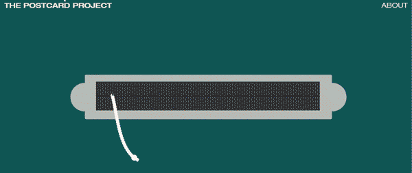
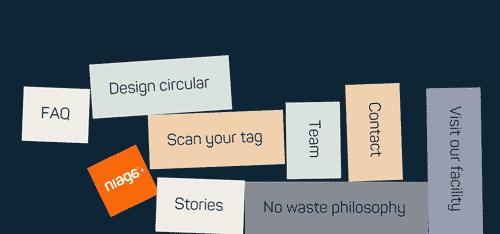
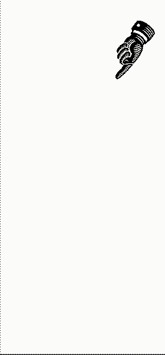

Overall the experience was really nice, working 8 hours a day was sometimes intense and quarantine got lonely, but I got to work on really nice project, meet new people and make some nice stuff!
I chose this studio because I wanted to develop my coding skills and efocus on web design. Another reason is that this studio is concious about their clients and chooses to work on projects that make the world a better place, some of the ones I got to work for are: Simavi - a non-profit helping female entreprenuers in Africa and Asia, Niaga - a company that innovates making recyclable versions of usually unrecyclable items such as mattersesand carpets, Double Dutch - an initiative by artists Inez and Vinoodh that presents an alternative to cash presents while supporting artists and charities, 2k40 - a campagin aimed at teenagers about healthy lifestyle choices,etc.
Professionally and personally it was an interesting change to be part of a team, I feel I got better at both communicating my ideas verbally as well as being more dilligent about the sketches and what is it/how I present my works even in the initial phases like sketching and research.
I got more sturctured in my process, partially because I had to adapt to the rythm and methods of a team, but also becasue I was aquainted with different new ways of organazing the process dividing tasks, and making to do lists and keeping trak of even the smallest detail, keeping trak of hours,etc
Also techincally I have improved my coding skills, got to learn 2 new design programs, new animation techniques and discovered some organizational tools such as Trello.
It was my first day. It went well I think. I got a loadfull of paswords and apps and got briefed on, among other things, how I will get briefed. I actually have to mock up websites, shouldnt be a big surprise but I just had the realisation I never did a detailed web mock up before.
Discussed some of the mock ups for Campspace today in the morning to pick a direction. Then at 11 I had a call with the team working on the website for 75 years of freedom campaign, they are starting the development phase. Bart (main developer on this project) gave me a concrete task within the project witch is the animation on the landing page using the anime.js library, I worked on that for the rest of the day, sending him the code by the end of the day, got some tips and so far it's really nice.
Now that all is digital we start every morning with a digital stand up at 9.00 where each member of the design teams tells what they will be working on, and maybe is they need any help or have something to share. At 10.00 there was the last daily stand-up for 75 years of freedom project for me, I finished my 2 tasks so I wont be joining the updates, however I started with a new project called "2k40" and I did research for 3 hours, mostly looking for cool websites, searching for soem sort of interesting way to make the website interactivty feel fresh
Today and yesterday was making mock ups in a program called Lunacy, it is similar to ps/illustrator but it exports sketch files witch are apparently industry standart and are what is used here for web design and collaborative work. The interface is different but easy to learn, has way less options than photoshop yet I am not missing much.
Today I've been mostly coding for the Postcard project, as yesterday and the day before, I am starting to doubt wether this is what I want to do, I do enjoy it but 8 hours straight for 3 days is a lot my brain I feel very sluggish and drained by the end of the day.
Morning: Stand up. Then discuss the progress on the Postcard Project with my supervisor, then I finally am getting a break from it. I underestimated how much kabk keeps me entertained by having multiple projects to work on, because even though I had other tasks for one or 2 hours a day the last 2 weeks have been a bit much, just because I focused on one project, now I get to do some more coding haha, but I am getting to know a new library: matter.js, its for making a physics engine within the browser, pretty cool. I get to make a web demo of one of the designs for the website of Niaga, a company that makes recyclable/sustainable home items such as carpets and matterses (items that usually are thrown away and not recycled due to the amount and complexity of material and clean up, but this company is making new innovative versions of those items with less components and all of them easily diasassembled and recycled.)
Lately I've been doing a lot of animation work, I am using a program called Proto.pie, I used animate for a while but this one imports sketch files directly into it and has a unique take on animation because it is meant to mimic interaction: an app or a web product, so there is a separate window that shows your design and you can click items to trigger different animations. Am really excited about this program, takes a lot of time out of animatng interactivity and has a lot of potential!
Today I've been briefed on making an instagram advertisment, did 5 mock ups to show some possible visual directions, and had a talk with my supervisor, tomorrow I start with animating it.
The Postcard Project has been pushed to the side and it shows, had a talk about it today and got some help with it, since there is only a month left I want to make it happen so now it's all in on it again, there are some redesgins needed, and a lot of coding for the next weeks,oof
The Postcard Project is an archive of postcards made by Studio Just. I had to come up ith a fun way to digitally showcase them and then make it happen. You can visit the website temporarily hosted here.
Using matter.js libary to make a physicsengine within a browser!
Part of an instagaram advert looking:
I hoped to gain more clarity on what i want to do when I graduate, however for better or worse that is not something I found. I now feel way more equipped for professional practice, but I also know I do not want to limit myself to only web design or coding, I really missed working with print, and even found a new interest in motion graphics. Nonetheless I think it was a very enriching experience, I really liked the projects I got to work on, and feel like I learnt a good amount.